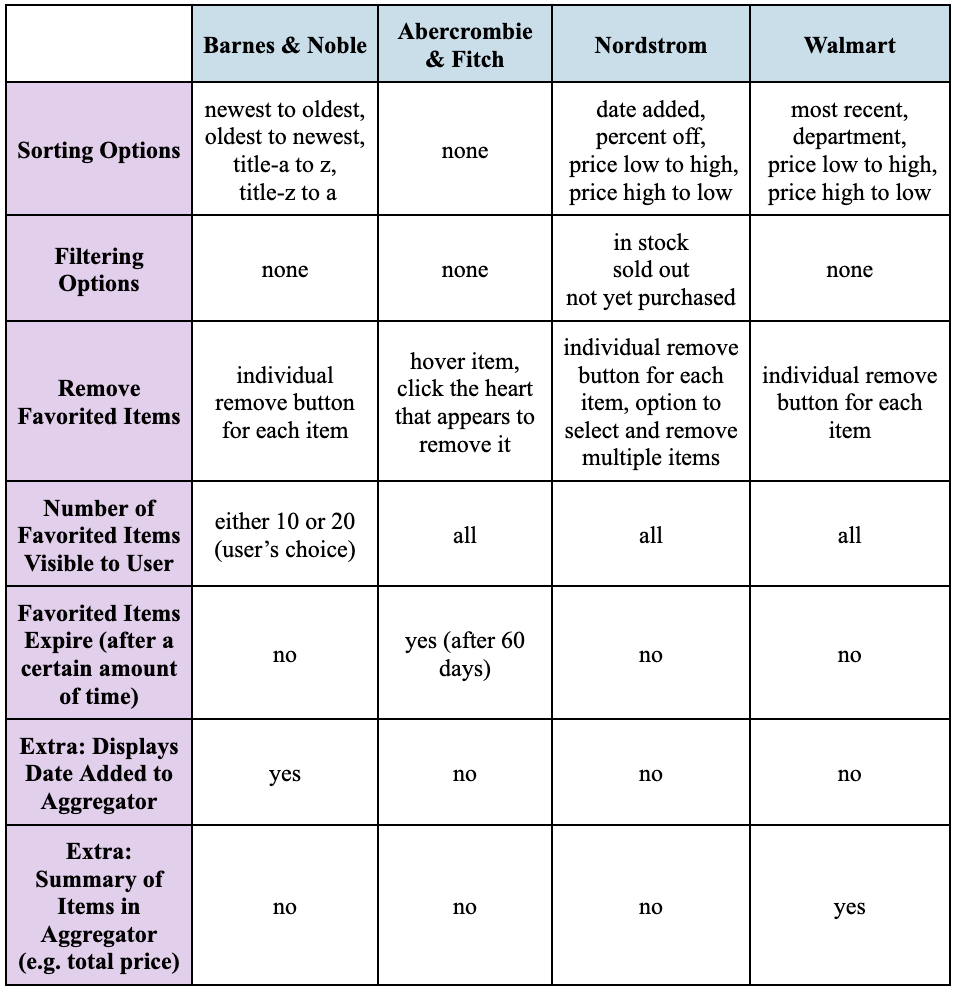
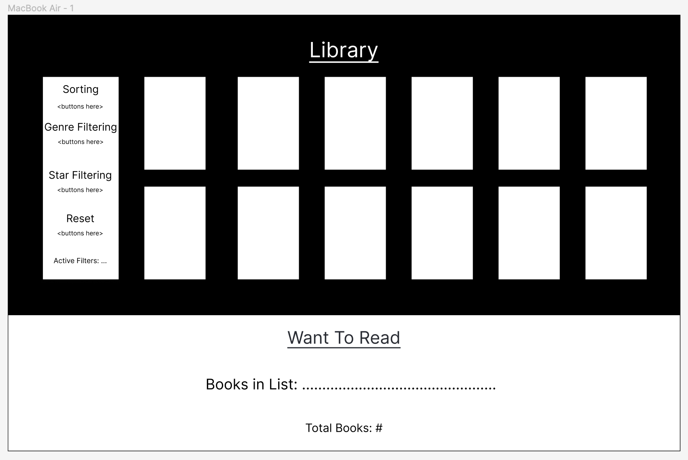
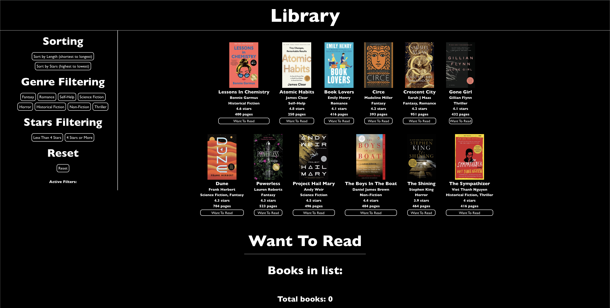

My objective for this project was to improve my ability of recognizing design strengths and weaknesses in industry by conducting a competitive analysis between multiple competitor companies. Additionally, I strove to enhance by React skills by utilizing interface components and internal state data to develop a list-based interface that supports sorting and filtering, and includes an aggregator. I really enjoyed this experience. This project helped me develop my ability to identify and analyze different implementations of various features and improve my coding skills.
I used the following four websites to conduct my competitive analysis: Barnes & Noble, Abercrombie and Fitch, Nordstrom, Walmart. I have included screenshots of their favorites list pages below.
I created a competitive comparison chart to gain a better understanding of how these different websites sort and filter information in their favoriting functions.
While some of these website’s favoriting function features were successful, in the sense that they followed design principles such as learnability, memorability, efficiency, and mental models, some of the features were lacking.
The sorting features of Barnes & Noble are successful since users are generally familiar with alphabetical sorting and chronological sorting, which improves the learnability of the sorting functionality. However, Barnes & Noble’s lack of filtering options decreases user efficiency when it comes to searching for a specific book in the favorites list or navigating book genres, authors, etc. Another unsuccessful feature of the Barnes & Noble favoriting function is the maximum display of 20 books in the favorites list, which restricts users who might want to favorite more books. Nordstrom supports a successful feature of removing multiple items from the favorites list at the same time, which helps the user save time on the interface. Additionally, the filtering options are helpful, as they allow users to determine which items on their favorites list are actually available for purchase, and are therefore the most relevant. The sorting options also demonstrate an understanding of two factors that users care about: discounts/sales and price, which makes them effective. Similarly, Walmart allows users to sort their favorites list by price and department. However, using “department” as a filter rather than a filtering feature might be more intuitive for users, since “department” isn’t a numerical value or related to chronology and other familiar sorting options.
Barnes & Noble, Nordstrom, and Walmart all include remove buttons next to each favorited item, allowing users to click them to remove specific items from their favorites list. This design choice aligns with users’ existing mental models of online interactions, as remove buttons are commonly encountered on other digital interfaces. By providing a remove button for each favorited item, users can easily identify which item will be removed when the button is clicked, enhancing efficiency and clarity. Consequently, the feature of remove buttons for each favorited item contributes to improved memorability, learnability, and efficiency.
On the other hand, the method of removing an item from Abercrombie and Fitch’s favorites list negatively affects user experience. Rather than utilizing a remove button, which adheres with users’ mental models of remove functionality, the user must hover over an item and unclick a filled in heart icon to remove the item from the favorites list. Rather than simply clicking a button, the user must hover and then click, which is less efficient and less intuitive. Additionally, this isn’t a common method of removing an item, so it is less memorable for the user. Additionally, this website did not support any sorting or filtering functionality, which impedes a user’s ability to navigate their favorites list or find a particular item. Overall, I didn’t find any of Abercrombie and Fitch’s features to be notably “successful.”
Some of the features I would like to implement are out of the scope of this project (e.g. selecting multiple items and removing them together, or including a search bar for the favorites list). However, here are a few features that are in the scope of this project:
The theme I have chosen is a “Library,” which consists of 12 books of varying genres, authors, ratings, and lengths. The aggregator in my app is a “Want to Read” list, and users can add books to this list and remove books from this list. To add books to this list, users can simply click the “Want to Read” button associated with the book. Once a book is added to the list, it can be removed by clicking the “Remove” button. Users can sort the “Library” by the page lengths of the books, from shortest to longest, and the star rating of the books, from highest to lowest. Additionally, users can filter the “Library” by multiple genres and by star rating. Book length, star rating, and genre are three important categories that readers consider when searching for new books to read, which is why these specific categories were chosen.
My app consists of 2 filtering categories (genre, star rating), 2 sorting features (book length, star rating), an aggregator (want-to-read list), a list of active filters, reset button (for resetting sorting and filtering), 12 books with buttons to add/remove to want-to-read-list.
Here is the Figma Mock-Up for my React app:
My app is linked here. Here is a zoomed-out image of the final product:
I learned a lot from the process of conducting a competitive analysis and then building my own app using React. I decided to first conquer the challenge of functionality (e.g. filtering, sorting, reseting) before I decided to address the design component. One challenge that I encountered was that I originally stored the BookItem's button state (clicked or not clicked) within the component itself. Sometimes when the BookItem was re-rendered, the button state was not preserved. I solved this issue by passing a boolean (indicating if the button was in wantToRead or not) into BookItem as a prop, thus factoring the button's state out of the BookItem component. I'm really happy with how my filtering and sorting turned out, especially because the user is able to filter by multiple genres. In retrospect, I wish I had implemented the sorting functionality and the filtering by star rating as drop down bars rather than buttons, since unlike genre, only one of the options can be realistically selected at any given point in time. However, aside from that, I'm especially happy with how my BookItems look, since I spent extra time trying to figure out how to render them in two rows and simultaneously account for how filtering would affect the "Library" visually.